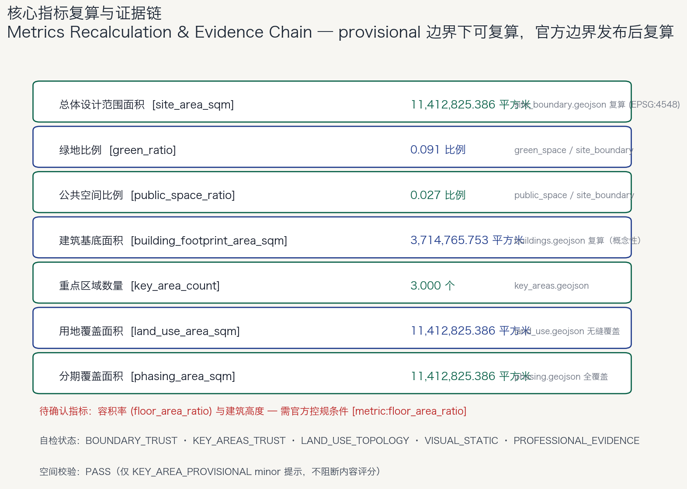

京张智脉 · Jing-Zhang AI Pulse
从百年钢轨到未来智脉 — One Spine · Three Cores · Two Wings · Six Veins
总览地图 一轴三核 · 双翼六脉

⚠️ 本方案使用 provisional 临时边界（SITE-001 / PROV-KEY-001~003），仅用于方案生成、展示与自检，不构成官方红线、审批依据或精确面积复算依据；官方边界发布后需整体复算。
三层范围
| 层级 | 面积 | 工作目标 | 设计深度 |
|---|---|---|---|
| 统筹研究范围 | 约 43.6 km² | AI 创新生态、未来城市形态、三区两翼协同 | 战略与生态研究 |
| 总体设计范围 | 约 1141.28 公顷 | 城市更新框架、空间结构、产业布局、设施支撑 | 控规深度城市设计 |
| 重点区域范围 | 约 368.4 公顷 | 众智园 / 原点社区 / 大钟寺详细设计 | 规划综合实施方案深度 |
重点区域
- 众智园AI自主创新加速区（约192.1公顷）— 全栈自主创新"脑核"：一园两带三组团，清河创新绿洲、模型测试场、治理沙盒。
- 北京AI原点社区（约104.3公顷）— 近校创新生态"心核"：校区-园区-街区缝合，开源发布厅、成果转化街。
- 大钟寺AI产业聚集区（约72.0公顷）— 智能原生新业态"产业核"：一站一街一客厅，四象限步行连通。
重点区域数量：3 处
用地分区
用地分类依据国土空间用地用海分类指南，覆盖总体设计边界、无缝隙无重叠：
- 公园绿地（1401）— 京张智脉主轴公园绿地骨架
- 科研用地（0802）— 三核与西翼研发创新空间
- 教育用地（0804）— AI 原点社区教育功能
- 商业服务业用地（05）— 大钟寺与中关村科技服务翼
- 文化用地（0803）、居住用地（0701）、社区服务设施（0702）— 小月河场景赋能翼
用地覆盖面积：1141.28 公顷
交通慢行
- 轨道为骨干：五道口、大钟寺等站点一体化，跨环路节点缝合。
- 慢行为体验：智脉主轴连续慢行+骑行+AI 导览廊道，主轴禁行机动车。
- AI 为调度：低速接驳环、机器人配送廊道、共享停车换乘。
- 六脉场景廊道沿横向联系廊道组织（ROAD-L1~L4）。
蓝绿公共空间
- 蓝绿骨架：京张智脉主轴公园绿地 + 清河、小月河绿色网络。
- 绿地比例：9.08%（provisional 复算）
- 公共空间比例：2.74%（provisional 复算）
- 三个绿意节点：清河创新绿洲、五道口青年公园、大钟寺绿意客厅。
- 三个广场：清华园站AI原点广场、开发者交流广场、大钟寺智脉交汇广场。
建筑
- 概念建筑基底：371.48 公顷
- 布局原则：主轴两侧适度、三核紧凑、两翼宜居。
- 拆改留：保文化、改低效、更新旧、建新核、留弹性；具体地块结论待官方控规确认。
- 建筑高度与容积率：待官方控规条件（unknown）
更新项目
10 项更新项目清单（JZ-01 ~ JZ-10），三类分期：
- P1 近期（三核先行）：主轴慢行贯通、清华园站纪念站、众智园清河界面、原点成果转化街、开发者步道。
- P2 中期（两翼联动）：大钟寺站连通、科技服务翼升级、场景赋能翼、端侧算力节点。
- P3 远期（全域提升）：东翼弹性用地预留。
分期覆盖面积：1141.28 公顷
AI 场景
12 张场景卡（4 张为 AI 产业测试验证场景 ★），覆盖 6 条场景廊道：AI+交通 / AI+医疗 / AI+教育 / 机器人配送 / AI 导览 / 企业服务。
| # | 场景卡 | 空间载体 | 类型 |
|---|---|---|---|
| 01 | 京张文化数字导览 | 智脉主轴 | 测试验证★ |
| 02 | AI 慢行安全助手 | 主轴慢行道 | 测试验证★ |
| 03 | 低速自动驾驶接驳 | 三核间短驳环 | 测试验证★ |
| 04 | 机器人配送试点 | 众智园/原点社区 | 测试验证★ |
| 05 | 开源发布厅 | 原点社区 | 运营 |
| 06 | 端侧算力驿站 | 主轴节点 | 运营 |
| 07 | AI 健康服务导航 | 东翼生活服务带 | 运营 |
| 08 | AI 教育体验站 | 原点社区 | 运营 |
| 09 | 企业服务智能体 | 西翼科技服务翼 | 运营 |
| 10 | 数据要素会客厅 | 大钟寺 | 运营 |
| 11 | 城市智能体治理沙盒 | 众智园 | 运营 |
| 12 | 青年第三空间 | 主轴活动段 | 运营 |
隐私边界：所有场景遵守数据最小化、公开来源、可解释、人工复核四原则，禁止过度监控与无法人工复核的场景。
核心指标
总体设计范围面积11,412,825 m²
绿地比例9.08%
公共空间比例2.74%
建筑基底面积3,714,766 m²
重点区域数量3 处
用地覆盖面积11,412,825 m²
分期覆盖面积11,412,825 m²
容积率（待确认）待官方控规
指标复算基于 EPSG:4548 投影面积，来源于 geometry/*.geojson；provisional 边界下可复算，官方边界发布后需复算。
任务覆盖
| 任务 | 状态 | 方案回应 |
|---|---|---|
| 公告 1.3 / 1.4 / 1.5 | 已覆盖 | 三层范围、生态体系、总体设计、重点区域逐条响应 |
| agent.1 总体概念与命名 | 已覆盖 | 京张智脉命名、人字Logo方向、一轴三核双翼六脉 |
| agent.2 创新生态 | 已覆盖 | 8 个全球生态案例、五大功能、三区两翼协同 |
| agent.3 场景赋能 | 已覆盖 | 12 张场景卡、6 类画像、隐私与人工复核边界 |
| agent.4 公共空间与地标 | 已覆盖 | 4 个 AI 朝圣地标、荣誉展示体系 |
| agent.5 文化叙事 | 已覆盖 | 人字形铁路→人本AI城市叙事、导视系统 |
| agent.6 长期运营 | 已覆盖 | 智脉四季活动体系、开发者社区、国际传播 |
自检状态
BOUNDARY_TRUST PASS KEY_AREAS_TRUST PASS LAND_USE_TOPOLOGY PASS VISUAL_STATIC PASS PROFESSIONAL_EVIDENCE PASS
空间校验：PASS（仅 KEY_AREA_PROVISIONAL minor 提示，不阻断内容评分）
格式校验 / 视觉校验 / 专业证据校验：本地自检通过，提交后以 CI 为准。
来源
- 资格预审公告（北京市规划和自然资源委员会海淀分局）— 官方任务依据
- 面向智能体任务书（用户提供清权摘要）— agent.1–agent.6
- brief/site-package/ 结构化任务书与 provisional 边界
- 城市设计管理办法 / 控规编制审批办法 / 用地用海分类指南
- data/source_registry.json 资料登记与使用边界
假设
- 官方红线、三处重点区 polygon 尚未发布，本方案使用 provisional 边界（不可作为官方依据）。
- 容积率、建筑高度、道路红线、退线、绿地率等控规指标待官方附件确认。
- 现状建筑、权属、市政管线、文保控制线等资料缺失，相关结论为概念建议。
- 正式边界与控规数据发布后，全部图层与指标需复算并更新方案。
核心图件


